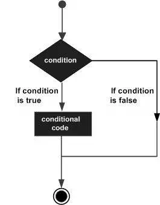

C# - Decision Making
Decision making structures requires the programmer to specify one or more conditions to be evaluated or tested by the program, along with a statement or statements to be executed if the condition is determined to be true, and optionally, other statements to be executed if the condition is determined to be false.
Following is the general form of a typical decision making structure found in most of the programming languages:

C# provides following types of decision making statements. Click the following links to check their detail.
|
Statement |
Description |
|
if statement |
An if statement consists of a boolean expression followed by one or more statements. |
|
if...else statement |
An if statement can be followed by an optional else statement, which executes when the boolean expression is false. |
|
nested if statements |
You can use one if or else if statement inside another if or else if statement(s). |
|
switch statement |
A switch statement allows a variable to be tested for equality against a list of values. |
|
nested switch statements |
You can use one switch statement inside another switch statement(s). |
The ? : Operator:
We have covered conditional operator ? : in previous chapter which can be used to replace if...else statements. It has the following general form:
Exp1?Exp2:Exp3;
Where Exp1, Exp2, and Exp3 are expressions. Notice the use and placement of the colon.
The value of a ? expression is determined as follows: Exp1 is evaluated. If it is true, then Exp2 is evaluated and becomes the value of the entire ? expression. If Exp1 is false, then Exp3 is evaluated and its value becomes the value of the expression.